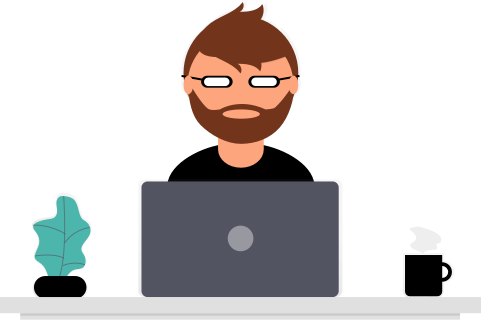

Hi, I'm Andrew
I’m a Software Engineer turned UI/UX Designer based in Bonn, Germany. Born and raised in Belfast, Ireland, I moved to Bonn, Germany in 2016 to expand my career opportunties on the continent. My current focus is User Experience Design for a number of customer facing products with the Deutsche Telekom.